【2026年最新】Huluで観れる！笑えてクセになる日本のコメディ映画10選
鴨川ホルモー、カメラを止めるな！、鍵泥棒のメソッドなど、クセになる日本のコメディ映画を10本厳選。
年間200本観る映画好きが選ぶ、外れない作品たち
年間200本以上の映画を観る映画好き。
特にミステリとSFが大好きで、このジャンルなら何時間でも語れます笑
でも、ジャンル問わず「本当に面白い作品」を見つけるのが趣味。
このサイトでは、私が何度も観返してる作品だけを厳選して紹介しています。
「これは外れないです」って自信を持って言える映画だけを選んでるので、
ぜひチェックしてみてください！
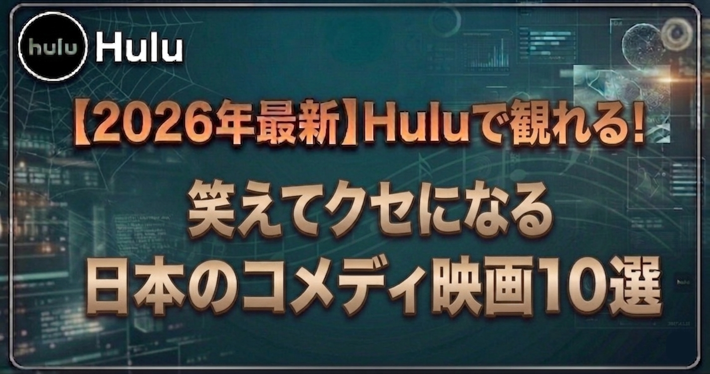
鴨川ホルモー、カメラを止めるな！、鍵泥棒のメソッドなど、クセになる日本のコメディ映画を10本厳選。
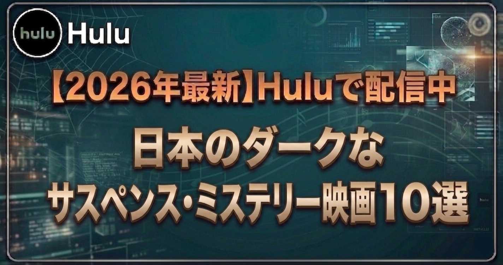
SCOOP、ロストケア、朽ちないサクラなど、社会の闇に切り込む日本のダークサスペンス・ミステリー映画を10本厳選。
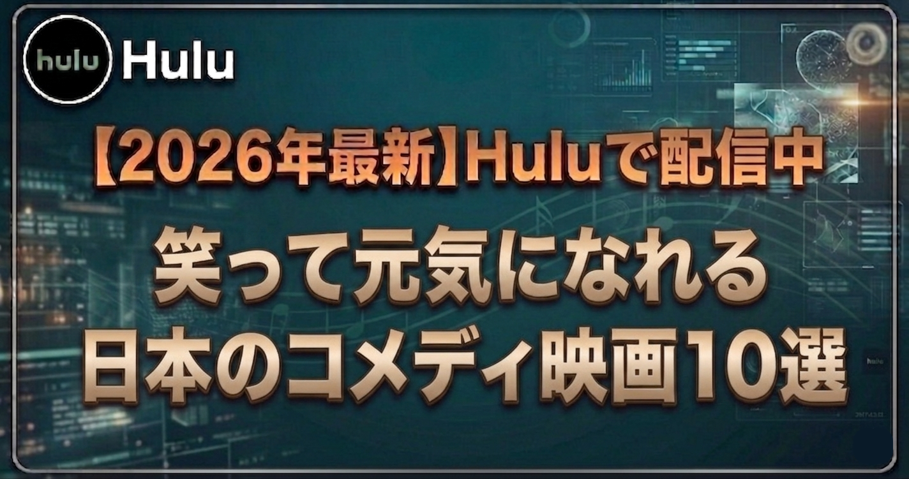
ウェディング・ハイ、今日から俺は!!劇場版、謝罪の王様など、笑って元気になれる日本のコメディ映画を10本厳選。
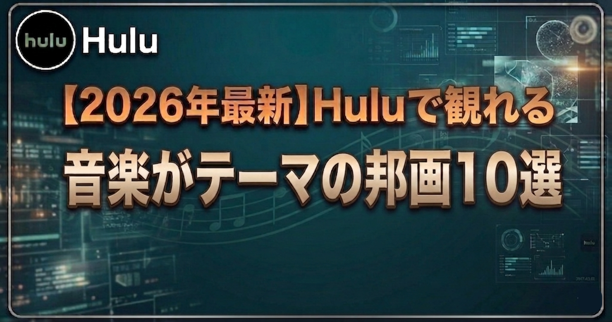
タイヨウのうた、フィッシュストーリー、少年メリケンサックなど、音楽がテーマの邦画を10本厳選。
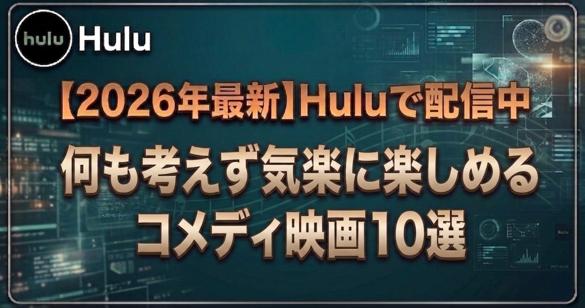
ハングオーバー、ホーム・アローン、マッシブ・タレントなど、何も考えず気軽に楽しめるコメディ映画を10本厳選。
THIS IS IT、グリーンブック、セッション、LA LA LANDなど、音楽がテーマの映画を15本厳選。
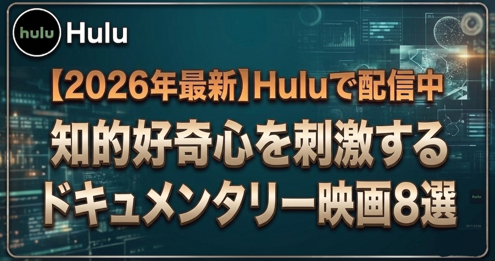
カラフルな魔女、築地ワンダーランド、ようこそ映画音響の世界へなど、知的好奇心を刺激するドキュメンタリー映画を8本厳選。
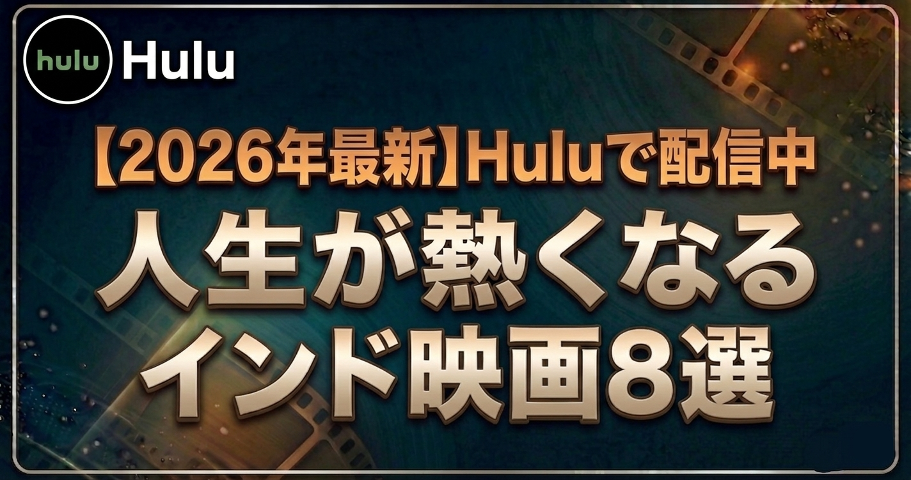
きっとうまくいく、バーフバリ、ムトゥなど、人生が熱くなるインド映画を8本厳選。
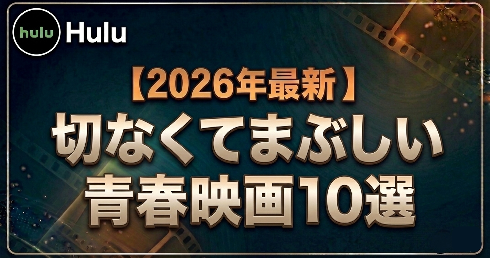
ルックバック、時をかける少女、かがみの孤城など、切なくてまぶしい青春アニメを10本厳選。
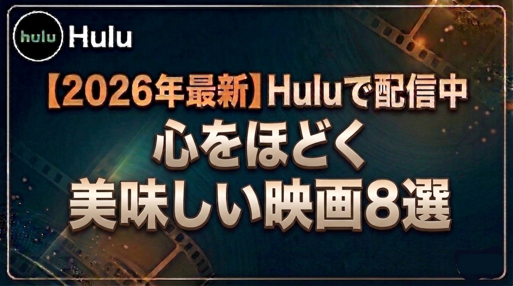
至福のレストラン、シェフ、かもめ食堂など、食で心がほどける映画を8本厳選。
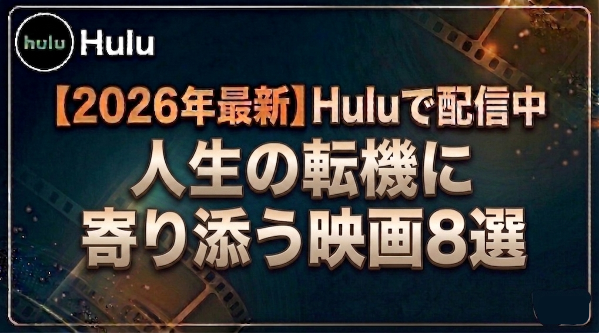
ダンス、ボクシング、雑誌編集、ウイスキー造りなど、人生の転機を描く映画8本。
赦しと喪失、アイデンティティの葛藤など、心に深く刻まれる人間ドラマを8本厳選。
ユージュアル・サスペクツ、セブン、シックス・センスなど、不朽のミステリー名作を10本厳選。
E.T.、バック・トゥ・ザ・フューチャー、AKIRA、攻殻機動隊など、不朽のSF名作を10本厳選。
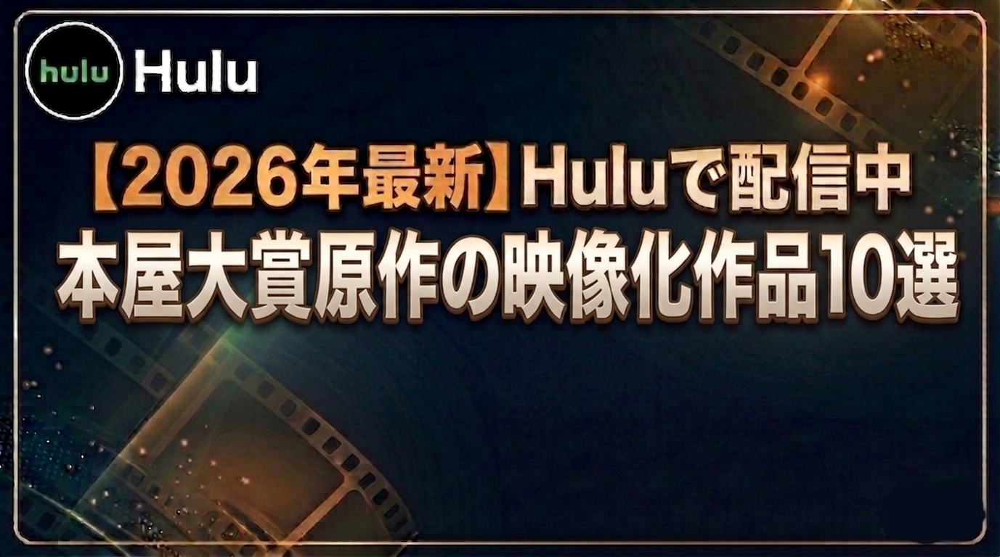
君の膵臓をたべたい、52ヘルツのくじらたち、八日目の蝉など、本屋大賞原作の名作映画を10本厳選。
シェフ、深夜食堂、南極料理人など、食を通じて人生を描く名作を10本厳選。
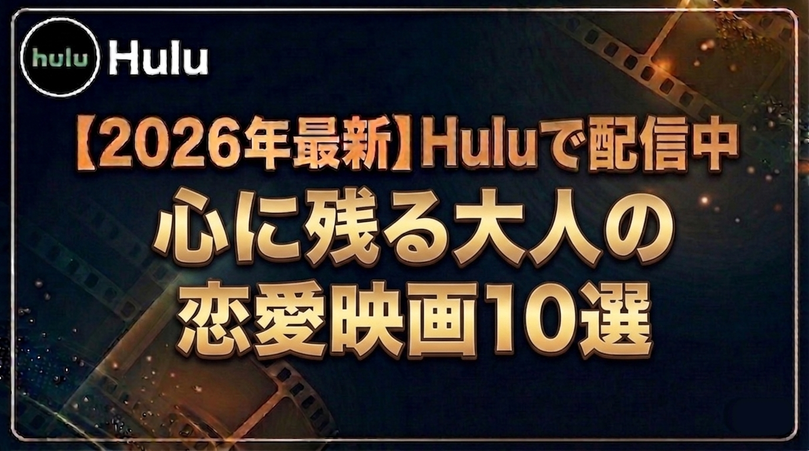
枯れ葉、パスト ライブス、そこのみにて光輝くなど、大人の心に深く響く恋愛映��を10本厳選。
ルックバック、言の葉の庭、蛍火の杜へなど、短くても満足度の高い名作を10本厳選。
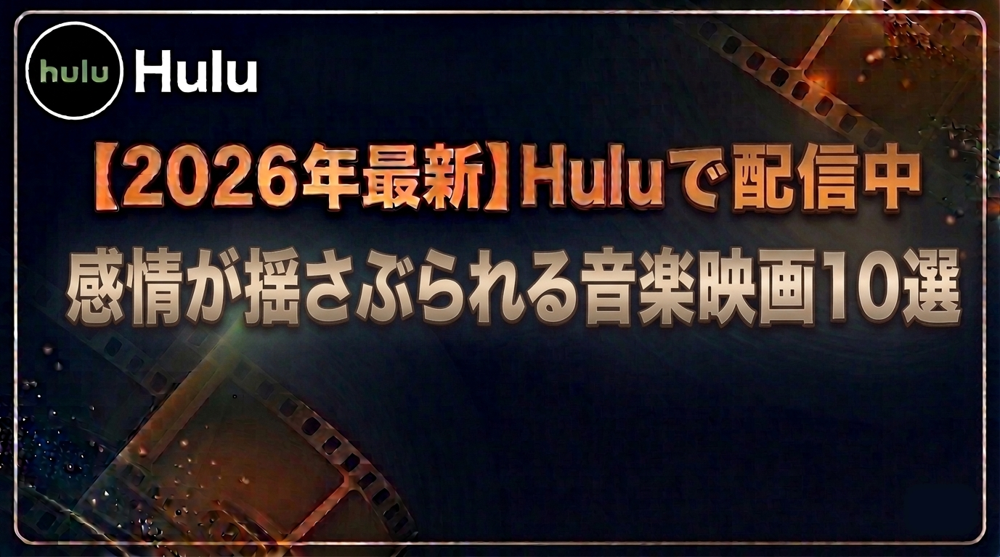
グレイテスト・ショーマン、セッション、エルヴィスなど、音楽の力に心揺さぶられる名作を10本厳選。
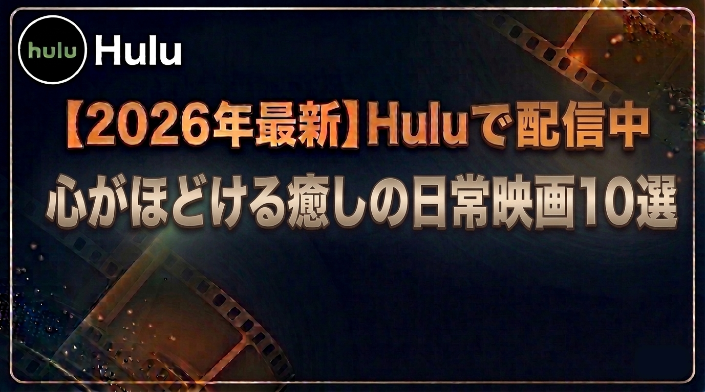
かもめ食堂、リトル・フォレスト、深夜食堂など、心がほどける穏やかな名作を10本厳選。
インターステラー、DUNE、TENETなど、壮大なスケールで描かれるSFの名作を10本厳選。
大作映画では出会えない独自の視点と世界観。北欧・ヨーロッパの隠れた名作を中心に厳選。
現代社会の問題をリアルに描いた邦画10選。高齢化、貧困、報道、差別、家族──考えさせられる名作を厳選。
ラスト数分で物語がひっくり返る快感。洋画の名作サスペンスから邦画の話題作まで、二度観したくなる8作品を厳選。
大人だからこそ深く心に響くアニメ映画を10作品厳選。新海誠作品、ルックバック、ゆるキャン△など、Huluで楽しめる名作をご紹介します。
心を揺さぶるヒューマンドラマの名作を10作品厳選。家族の絆、友情、人生の選択など、感動の物語をお届けします。
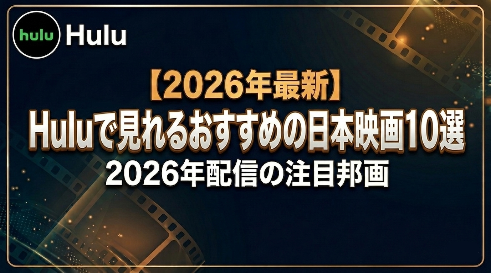
Huluで配信中の日本映画から、本当におすすめできる作品を10本厳選。感動作からアニメ、青春ものまで、幅広いジャンルから紹介します。
思いっきり泣きたい時におすすめ。家族愛、友情、恋愛、人生の選択など、心を揺さぶる感動作を10作品厳選しました。
日本映画で心を揺さぶられたい方へ。家族愛、青春、恋愛、人生の選択など、日本人の心に響く感動作を10作品厳選しました。
Jホラーの傑作から最新作まで、Huluで配信中の日本のホラー映画を10作品厳選。心底震える恐怖体験をお届けします。
本格ホラーから心理サスペンスまで、Huluで配信中の海外ホラー映画を10作品厳選。恐怖と緊張感を味わいたい方におすすめです。
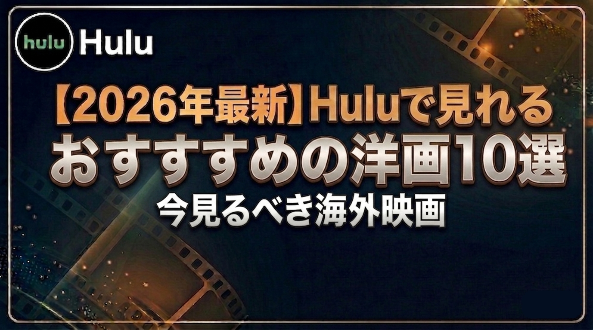
Huluで配信中のおすすめ洋画を厳選。アカデミー賞受賞作から感動作、話題作まで、誰もが楽しめる名作を紹介します。
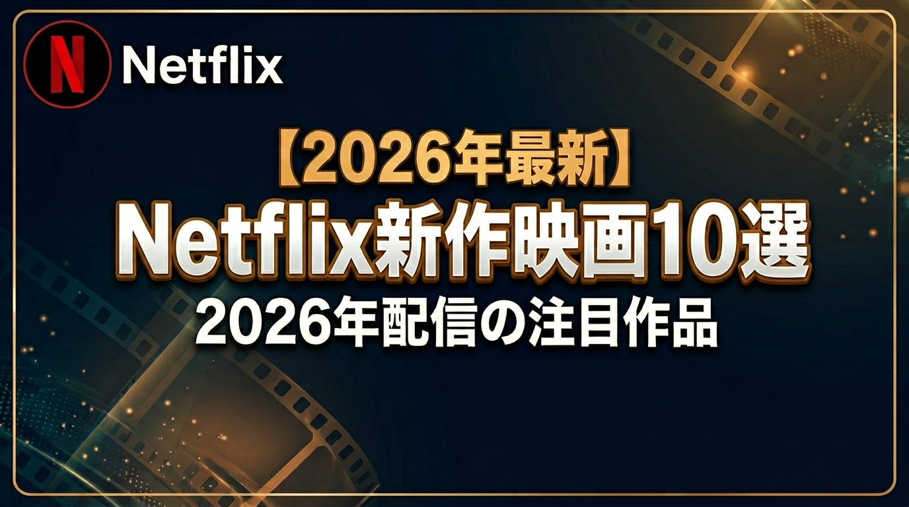
2026年にNetflixで配信された最新作を10作品厳選。話題の新作から隠れた名作まで、いち早くチェックしたい作品を紹介します。
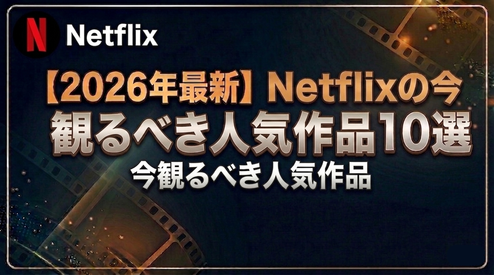
実際の視聴データとユーザー評価を基に、今本当に観られている人気映画TOP10をランキング形式で紹介します。
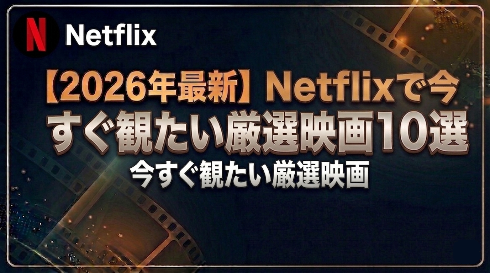
本当におすすめできる映画を10本厳選。映画選びに迷ったら、このリストから選べば間違いありません。
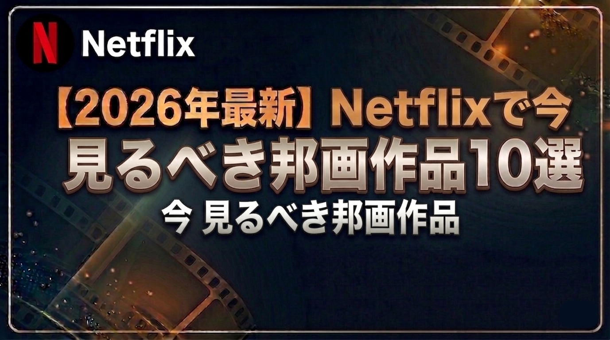
実際の視聴データを基に、今最も観られている日本映画をランキング形式で10作品紹介します。
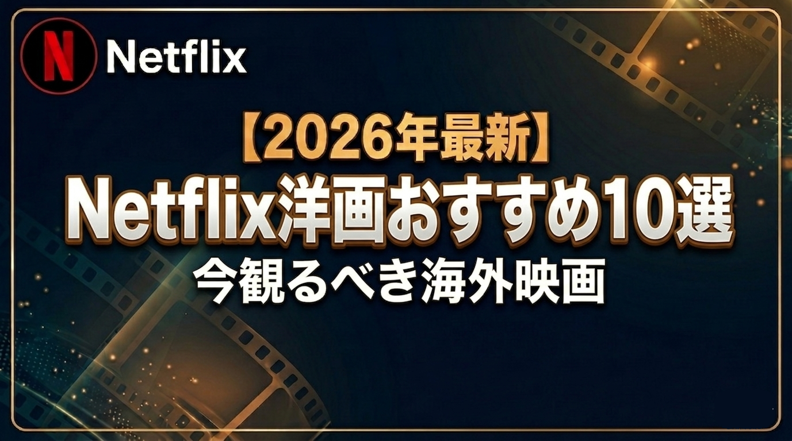
洋画選びに迷ったら、このリストから選べば間違いなし。アクション、ドラマ、コメディ、ミステリー、SFまで幅広く厳選しました。
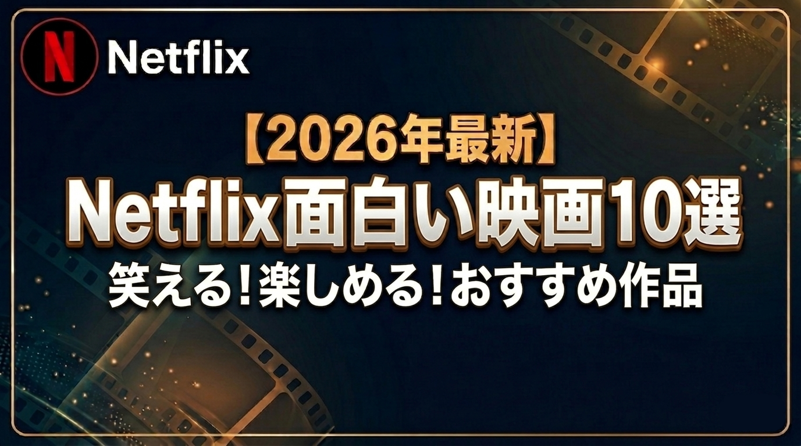
何も考えずに楽しめる映画を10作品厳選。アクション、コメディ、SF、ゾンビまで、純粋にエンタメとして楽しめる作品を紹介します。
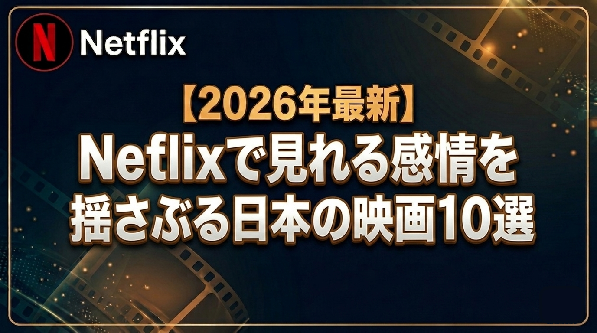
日本映画で心を揺さぶられたい方へ。家族愛、青春、恋愛、人生の選択など、日本人の心に響く感動作を10作品厳選しました。
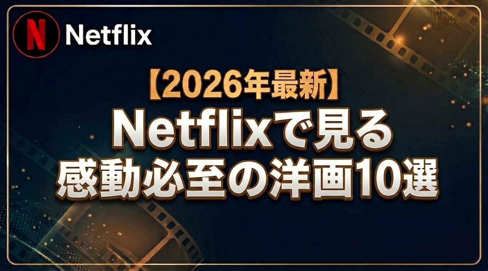
思いっきり泣きたい時におすすめ。家族愛、友情、恋愛、人生の選択など、心を揺さぶる感動作を10作品厳選しました。
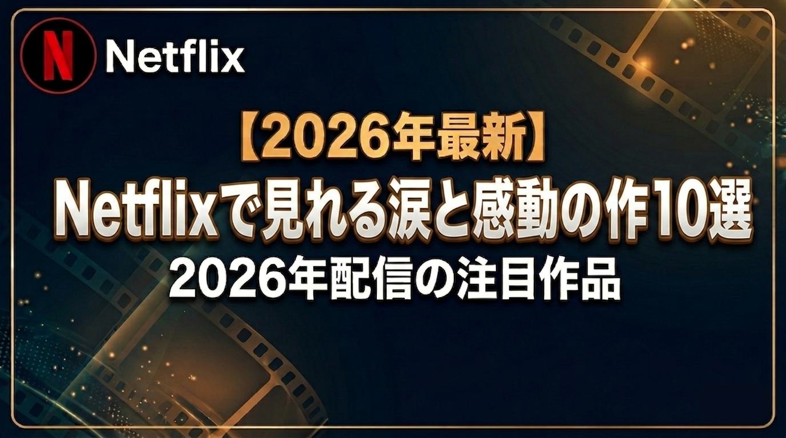
心を動かされる映画、感動して涙を流したい時におすすめ。家族愛、友情、人生の選択など、心を揺さぶる作品を厳選しました。
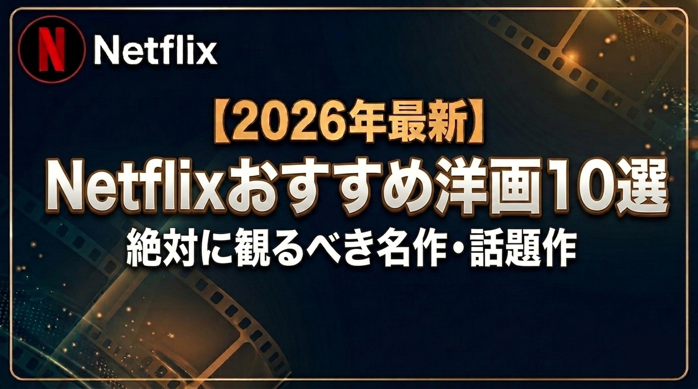
Netflixで配信中のおすすめ洋画を10作品厳選。ミステリー、アクション、サスペンス、SFなど、誰もが楽しめる名作を紹介します。